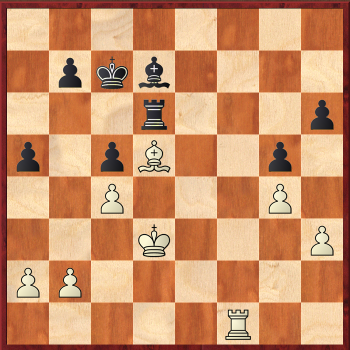

From 12-19 April I played a tournament in Paris and also this time my brother Lucas took part. I went there with my grandparents which was very nice of them. I had already been a few times to Paris before and I even played in this tournament 2 years ago. My grandmother is a very good cook, and we always joked that we were having food from a 3 stars restaurant. My grandfather is very sick and gets tired quickly so we didn't see much of the city but I already had been to Paris 3 times before so I had already seen most of the city. In the first round I played a draw against Fro Trommsdorf (2024). I was much better in an ending and I decided to go for the winning plan only at the wrong time. Now my opponent tricked me and won a pawn after which the game ended in a draw. This wasn't a very good start but in the next 2 rounds I managed to fight back and won 2 times in a row. I was black against Patrick Siptz(2156) In the fourth round I played against Maxim L Devereaux (2337) and in an equal endgame I made a huge blunder.  My last move was Bf3-d5 can you spot the trick for black? After that I had to start all over again with my tournament, happily I won the next three games in a row. In the 8th ground I finally played against a higher rated opponent (Shchkaevecvhc) (2527). I was slightly better throughout the whole game but I didn't see a way to increase my advantage. Eventually the game ended in a draw. In the 9th and final round I played against Zinchenko(2532) with the black pieces. If I managed to win I would obtain my last IM norm. Unfortunately I didn't manage to win but it was still a very interesting game: It was a nice tournament and I enjoyed it very much! |